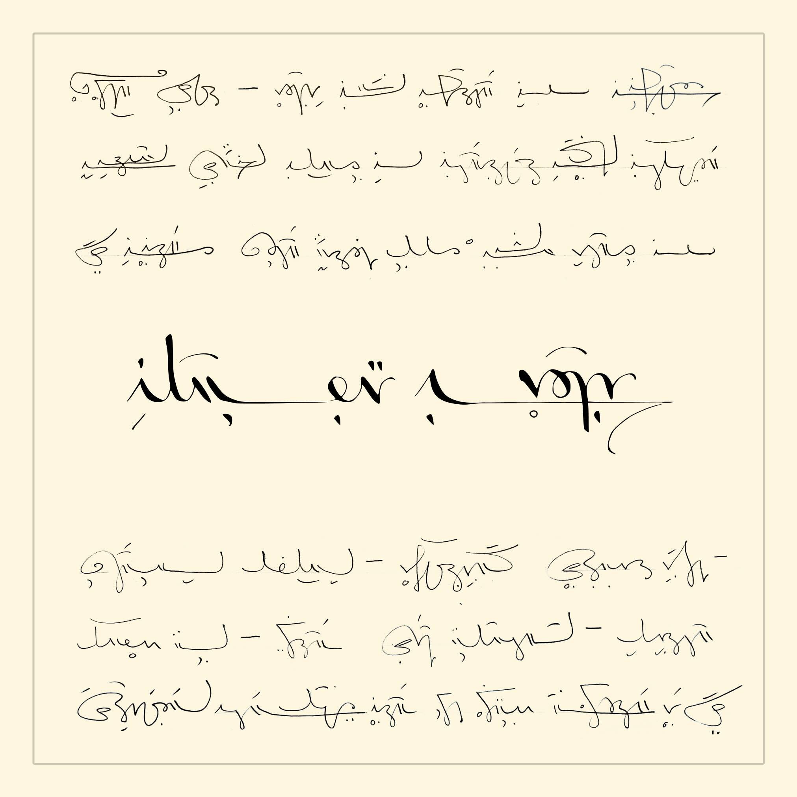

manuscript
On this page:
A writing system I use to explore what I find interesting about manuscripts. For now, I've tried to make the system 1] a bit more phonetic in its spelling than standard English (it will necessarily reflect my accent), and 2] fun to write in cursive!
It is a work in progress.
There is a github repository associated with this project where I'll put font files and the like. Feel free to star if interested.
consonants
29 English consonant sounds are represented. Rather than simply come up with 29 unique glyphs, we'll devise a system to organize these sounds in way that makes writing them more manageable.
consonant sounds
1. Sounds are organized into three families based on the general area where they are pronounced in the mouth (Y axis in the table below).
2. Within the families, sounds are organized into groups based on three factors of similarity (X axis in the table below):
- Unvoiced and voiced variation on the same sound (e.g. t/d)
- Similar pronunciation (e.g. both t/d pair and θ/đ pair are pronounced with the tip of the tongue at the front of the mouth)
- Reoccurrence of a sound within compounds (t/d contained in tʃ/dʒ)
| Consonant sounds | a. base letter | b. related | c. compound | ||||
|---|---|---|---|---|---|---|---|
| unvoiced | voiced | unvoiced | voiced | unvoiced | voiced | ||
| 1. lips | bilabial | p | b | ||||
| m | w | cw | gw | ||||
| labiodental | f | v | |||||
| 2. ridge | alveolar | t | d | θ | đ | tʃ | dʒ |
| s | z | ʃ | ʒ | ||||
| n | |||||||
| l | |||||||
| 3. back | palatal | r | y | ||||
| velar | k | g | ks | gz | |||
| ŋ | |||||||
| guttural | h | ʔ | |||||
writing consonants
Each consonant follows one of three shape patterns (Y axis on the chart below), depending on whether the letter has a stem and where the stem is placed. These three “families” indicate approximately where a letter is pronounced in the mouth (see Y axis on “consonant sounds” chart above).
I write 29 consonant sounds with only twelve letters. This is because similar sounds are grouped (see X axis on “consonant sounds” chart above), and each group is written with a single letter. Diacritics are then used to distinguish sounds in the group (X axis on the chart below).
| Consonant shape and diacritics | base | related | compound | ||||
|---|---|---|---|---|---|---|---|
| unvoiced | voiced | unvoiced | voiced | unvoiced | voiced | ||
| lips | ! | ; | , | . | ' | : | " |
| ridge | ? | ||||||
| back | ; | ||||||
Example:
Here's how the above patterns play out with the letter p:
phas a stem on the left side of the letter, meaning it is a sound pronounced at the lips. It represents thepsound.- If you take the letter
pand add a voice mark on top of it, you getb. This represents thebsound (p+ voice).
The 29 written consonant sounds follow the above patterns. One exception for practicality:
it is not necessary to write the voiced diacritic for voiced consonants with no unvoiced
counterpart (m, w, n, l, r,
ŋ).
| Writing consonants | base letter | related | compound | ||||
|---|---|---|---|---|---|---|---|
| unvoiced | voiced | unvoiced | voiced | unvoiced | voiced | ||
| lips | bilabial | p (p) | b (b) | ||||
| m (m) | w (w) | q (kw) | W (gw) | ||||
| labiodental | f (f) | v (v) | |||||
| ridge | alveolar | t (t) | d (d) | F (θ) | V (đ) | T (tʃ) | D (dʒ) |
| s (s) | z (z) | j (ʃ) | J (ʒ) | ||||
| n (n) | |||||||
| l (l) | |||||||
| back | palatal | r (r) | y (y) | ||||
| velar | k (k) | g (g) | x (ks) | G (gz) | |||
| N (ŋ) | |||||||
| guttural | h (h) | H (ʔ) | |||||
Note: The consonant used to represent a glottal stop sound
(H), is also used at the beginning of any word that
starts with a vowel (this will make more sense in light of how we write vowels themselves).
In English,
pronouncing a stop at the beginning of such words is
optional.
vowels
Vowels are still evolving in how I write them. This flexibility doesn't tend to impact the rest of the writing system, however, since vowels are represented as diacritics that freely float below the consonant that precedes them.
For now, I tend to be able to get away with writing only 15 vowel sounds, which, much like consonant sounds, are organized into families (Y axis) so that we don't have to write 15 unique glyphs.
| vowels | short | long | diphthong | other |
|---|---|---|---|---|
| a | nap | cape | aha! | |
| e | pen | greek | ||
| i | nib | tide  |
||
| o | hot | hope | loud | raw |
| u | mud | muse | ||
| oo | room | book |
In semitic languages like Hebrew and Arabic, in which vowels are also written as diacritics, they are often omitted from writing altogether with no impact on reader comprehension. We can't do this in English because our language is not built around syllables in the same way that semitic languages are.
That said, I do find that as I become more familiar with this script, I learn to omit a great deal of vowels without the text becoming ambiguous. This makes writing more efficient.
In the same way, some consonant diacritics can be discarded as well.
Example:
Take the article “the”. It is often sufficient to simply write it as
the letter t, omitting both the top diacritic
indicating that it is specifically a đ consonant sound, as well as the bottom
diacritic indicating that it is followed by a short u vowel sound
(approximately). “I took t train” just works.
cursive manuscript
connecting letters
Writing this script in cursive is not as straightforward as typical English cursive with a latin alphabet because letters do not consistently attach in the same place (in English cursive, this tends to be at the writing line).
Instead, how a letter is written depends on two factors:
- Whether the letter is at the beginning, middle, or end of a word.
- Whether the stroke of the pen approaches this letter from the top, middle, or bottom.
The table below summarizes how letters change shape and how they attach based on these two factors. Letters not shown on the chart (k, N, h) don’t change.
| cursive | beginning | middle | end | ||||
|---|---|---|---|---|---|---|---|
| top | middle | bottom | top | middle | bottom | ||
| p | |||||||
| m |  |
||||||
| f | |||||||
| t | |||||||
| s | |||||||
| n | |||||||
| l | |||||||
| r | |||||||
Since cursive is partly a matter of ergonomics, partly a matter of esthetics, there is
flexibility here. For
example, I often find that I like to use the middle form of letters in the
t family at the beginning of one-syllable words
(see visual examples below).
connecting words
Words aren't always written from left to right with spaces in between; they can succeed one another in other ways as well. Despite this flexibility, words and word order remains clear thanks to the two following constants:
- Words never connect to one another in a cursive manner, meaning that the first letter of a word will never be written with the same pen stroke as the last letter of the preceding word.
- While whole words don't always appear left-to-right, the first letter of a word will always appear further left than the first letter of the subsequent word.
Some examples:
The most obvious way to write the words “the pen” would be in the following way:
However, I would probably write it like this:
In addition to choosing the middle form of the letter
t, I have also extended the tail of this letter in
a way that causes the second word to “sit” on the first. This is the most common way in
which words overlap on the horizontal axis, and it can be briefly explained in three points.
- A word can sit on a horizontal stroke belonging to a previous word if that horizontal stroke is at the writing line.
- The two words remain distinct in that aren't connected with a cursive stroke.
- Word order remains discernible in that the first letter of the first word precedes the first letter of the second word.
As long as word order remains clear thanks to these constants, there's room for quite a bit of flexibility. For example, in the phrase below, “the nib of the pen”, the article “the” is written in two different ways, for no other reason that this just seemed to fit:
sample text
Transcription below. Title: “Asterix in Corsica”
“For most people, Corsica is the homeland of an emperor who has left pages in history as indelible as those inspired by our old friend Julius Caesar. It is the country of vendettas, siestas, complicated political games, strong cheese, wold pigs, chestnuts, succulent blackbirds and spry old men watching the world go by…”
fonts
As much as I'd like to make one, there currently is no cursive font for this script. However, there is a bare bones, somewhat rough-around-the-edges print font which I made for the purpose of documentation, and which can be downloaded from the github repository. This fond only includes consonants.
The chart below summarizes how inputs are mapped:
| letter | lowercase | uppercase |
|---|---|---|
| a | ||
| b | b | |
| c | ||
| d | d | D |
| e | ||
| f | f | F |
| g | g | G |
| h | h | H |
| i | ||
| j | j | J |
| k | k | |
| l | l | |
| m | m | |
| n | n | N |
| o | ||
| p | p | |
| q | q | |
| r | r | |
| s | s | |
| t | t | T |
| u | ||
| v | v | V |
| w | w | W |
| x | x | |
| y | y | |
| z | z |